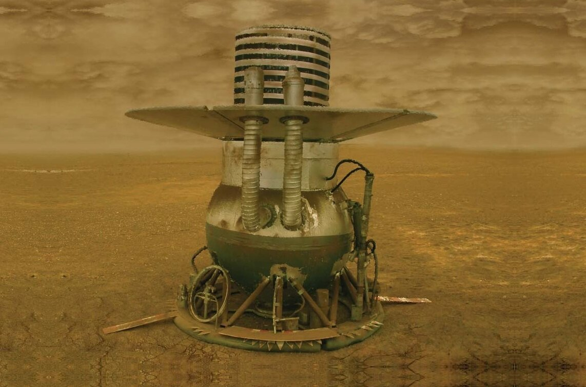
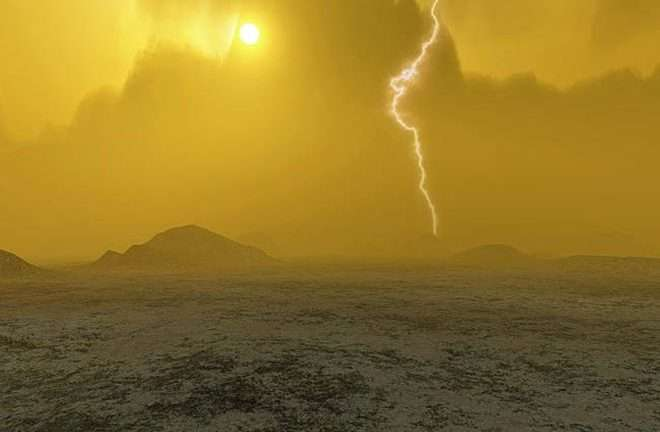
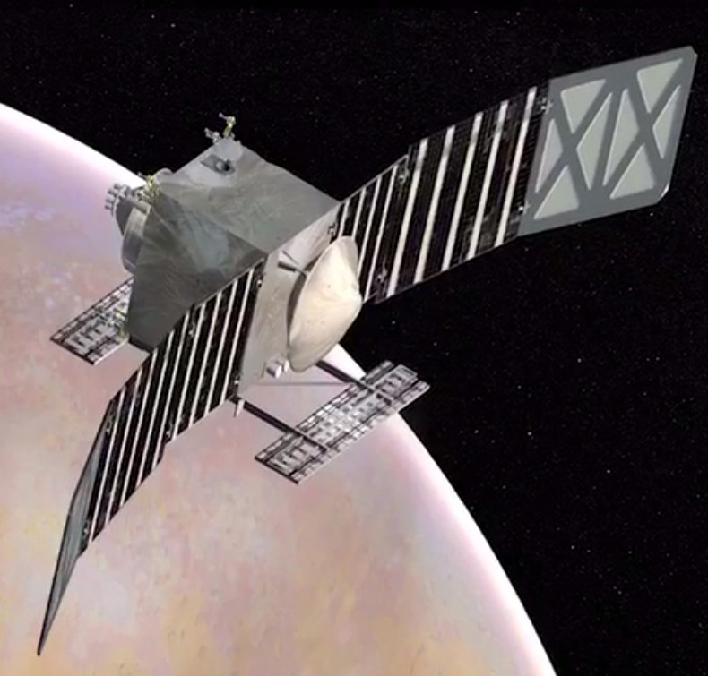

استكشاف كوكب الزهرة
الزهرة: كوكب النار
الزهرة هو الكوكب الثاني في ترتيب المسافة عن الشمس ويُعتبر من أشد الكواكب حرارة في النظام الشمسي. يُعرف بسطوعه الشديد في السماء ليلاً.

مهمات فينيرا: الاستكشاف الأول
في الستينيات والسبعينيات، أطلقت روسيا سلسلة من المهمات الفضائية إلى الزهرة تحت اسم "فينيرا"، حيث كانت هذه المهمات تهدف إلى دراسة الغلاف الجوي والسطح القاسي للكوكب.

الغلاف الجوي السميك
الغلاف الجوي للزهرة يتكون بشكل رئيسي من ثاني أكسيد الكربون مع سحب كثيفة من حامض الكبريتيك، مما يجعل سطحه ساخنًا بشكل لا يطاق.

استكشاف مستقبلي
رغم الظروف القاسية، فإن استكشاف الزهرة لا يزال يشكل أهمية علمية، وتُخطط العديد من الوكالات الفضائية لإرسال بعثات جديدة في المستقبل القريب.
